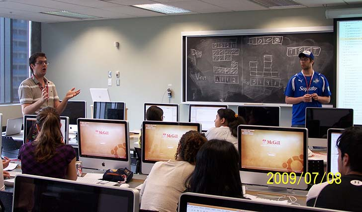

The main Computer Science programs offered for undergraduates are:
- Computer Science Major
- Computer Science: Computer Games Option Major
- Software Engineering Major
- Core Science Component in CS
- Mathematics and CS
- Statistics and CS
- Physics and CS
- Biology and CS
- etc.

Something to note is that McGill University is huge and it probably why it is very known. That said, because of its size, it has many problems since you can't interact with neither the profs or other students all that much. Despite these cons, this university gives you alot of credibilty, which will definitely get you hired.
To give you an idea:
Computer Science in McGill
"The School of Computer Science is part of the Faculty of Science. The School of Computer Science groups
34 faculty members who teach and do research on a wide variety of computer science and software engineering
topics. The School of Computer Science is located in the McConnell Engineering and Trottier Buildings. Courses
at McGill are taught in English. For most upper-level computer science courses, classes are small (about 10-30
students), and students have numerous opportunities for direct interaction with professors, both inside and outside
the classroom."
Most popular programs:
- Major in Computer Science, for students interested in a broad study of computer science topics.
- Major in Software Engineering, for students interested in problems related to the design, development, and maintenance of software systems.
- Minor in Computer Science, for students interested in a computer science complement to another major field of study.
Why apply for McGill?
"A university-level education in computer science will help you develop your analytical thinking and creative
problem solving skills while studying a wealth of exciting topics with a wide range of applications (from medicine
to business). An undergraduate education in computer science will also open the door to careers in a variety of
companies (engineering, high-tech, pharmaceutical). For those of you who may be thinking about graduate studies, a
degree in computer science is an excellent foundation for the study of computer science at the graduate level
(M.Sc. or Ph.D.). McGill is a top-ranked and internationally-recognized university, and our graduates typically move
on to fulfilling careers or further studies in the top companies or universities."
Something that they added:
Computer science encompasses everything from theory to applications, including software engineering, programming languages,
robotics, compilers, databases, game design and development, operating systems, artificial intelligence, computational biology,
computer vision, and the analysis of algorithms.
McGill University is one of the top research universities in Canada and is the only Canadian university to rank consistently
among the top 25 universities in the world (based on Times and QS rankings). The School of Computer Science currently stands
second in Canada for its research funding. Our professors have received most of the top awards in Computer Science, while our
students go on to become top-notch research and industry leaders. A graduate degree from the McGill School of Computer Science
is recognized in both the academic and industrial worlds as a proof of excellence.
Our department is currently 34 faculty members strong, 60 Ph.D. students, and 100 Masters students. All of our Ph.D. students
and most of our Masters students are funded through teaching assistantships or research assistantships. Approximately half our
graduate students are Canadian and the other half are from abroad.